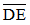
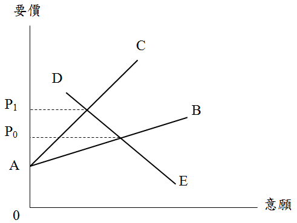

都市更新整合不易成功之原因
推動都市更新過程中，有的住戶較積極，有的住戶較消極。前者稱為積極型住戶，後者稱為消極型住戶。
-
積極型住戶，配合度較高，希望能促成都更案，故其參與都市更新之意願曲線，彈性較大，如圖之[圖片1]。
-
消極型住戶，配合度較低，甚至會有拿翹行為，故其參與都市更新之意願曲線，彈性較小，如圖之[圖片2]。
另，實施者因住戶要價愈高，推動都更案之意願愈低；因住戶要價愈低，推動都更案之意願愈高。因此，實施者推動都更案之意願曲線，如圖之[圖片3]。
由[圖片4]與[圖片5]之交點，決定積極型住戶之協商要價為P0。[圖片6]與[圖片7]之交點，決定消極型住戶之協商要價為P1。由此可知，積極型住戶之協商要價較低，消極型住戶之協商要價較高。換個角度分析，相同不動產分配標準，要價低之積極型住戶贊成，要價高之消極型住戶反對，造成都市更新整合不易成功。
[圖片8]
這篇文章考過哪些題目
讀完試著自己作答，再點進去對答案。依文字相似度自動比對，不一定完全對應。
- 104 高考《土地經濟學》第 1 題
目前政府推動都市更新，常遇到有部分住戶贊成部分住戶反對，造成都更不易成功；請繪圖說明何以相同不動產分配標準，會產生住戶差…
文章圖片



